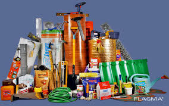

Yuklarni Tanlash

📍 Toshkent ➝ Samarqand
Masofa: 310 km
Vaqt: 5 soat
Yuk turi: Oziq-ovqat
💰 Narx: 550,000 so'm

📍 Andijon ➝ Buxoro
Masofa: 620 km
Vaqt: 10 soat
Yuk turi: Qurilish materiali
💰 Narx: 1,200,000 so'm

📍 Farg‘ona ➝ Qarshi
Masofa: 470 km
Vaqt: 7 soat
Yuk turi: Maishiy texnika
💰 Narx: 890,000 so'm